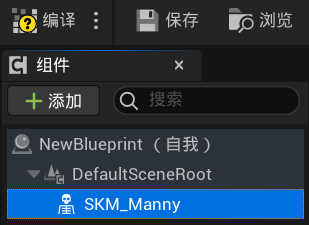
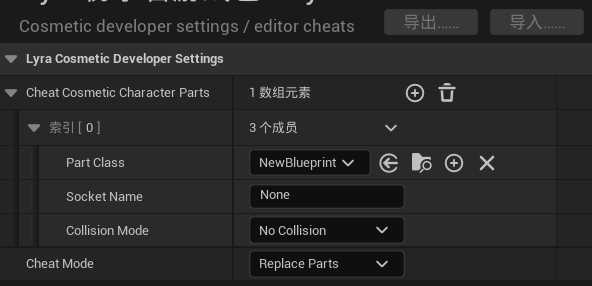

Lyra框架 将角色模型抽象为
Charater Part配饰/组件
但 组件 容易与功能组件Component混淆
Lyra框架 称这个为 Cosmetics System 化妆/妆点系统
将模型配饰 帽子/背包 甚至是角色模型本身视作一个 Character Part
Lyra框架目前并没有把
Cosmetics System固化为一种组件或实际的逻辑系统
仅仅是目前对于Charater Part的操作逻辑的一种统称
角色模型
开发中最常见的需求就是更改角色模型
有可能是切换衣着, 甚至是切换角色
在 Lyra框架 中允许我们仅仅切换角色外观而不需要重制一个新 Pawn
新建蓝图
虽然叫
Part Actor
但其实只要是Actor类都是可用的(包括任何子孙类)演示项目
Shooter中使用的是LyraTaggedActor类
添加 > 蓝图类
选取父类 Actor > 选择
通常将角色配饰资源保存在 /Charaters/Cosmetics 文件夹中
配置角色模型与动画
在添加角色之前需要准备一套已制作好
骨骼骨骼网格体IK绑定资产的角色
以下图方便用的是原生内容包中的角色资产, 注意导入资产可能会影响 Lyra框架 内容
其他来源的角色资产都可以通过同样的操作配置使用
以下仅作演示
这里直接添加第三人称内容包, 使用里边的原生 Mannequins 角色
将 SKM_Manny骨骼网格体 拖入

SKM_Manny骨骼网格体位置:
Content/Characters/Mannequins/Meshes/SKM_Manny
有了骨骼网格体, 还需要指定动画蓝图
由于我们需要让它使用 Lyra框架 中的动画
需要建立一个包含重定向的动画蓝图
右键 SKM_Manny骨骼网格体 > 创建 > 动画蓝图
还有一个重定向器
这里可以直接复制 Lyra框架 现成的
RTG_Mannequin位置:
Content/Characters/Heroes/Mannequin/Rig/RTG_Mannequin
打开复制出来的 RTG_Mannequin
修改 目标IKRig资产 指定为第三人称内容包中的
IK_Mannequin位置:
Content/Characters/Mannequins/Rigs/IK_Mannequin
准备好这两个资源后
打开新建的动画蓝图 > 创建节点 Retarget Pose From Mesh
同时指定节点中的 IK重定向器 资产 为刚才复制的 RTG_Mannequin
记得编译
回到已经拖入骨骼网格体的 Actor 中
指定参数 动画 > 动画类 为刚配置好的动画蓝图
最后记得编译
这样一个 Part Actor 就制作完成了
应用模型
Lyra框架 为了开发测试的方便, 特意为此留下了一个配置接口
打开 编辑 -> 编辑器偏好设置
找到 Lyra -> Lyra Cosmetic Developer Settings > Cheat Cosmetic Character Parts
添加一项, 并将参数 Part Class 指定为配置好的那个 Part Actor

随便进一个关卡, 模型将会被这个配置中的 Part Class 所替换